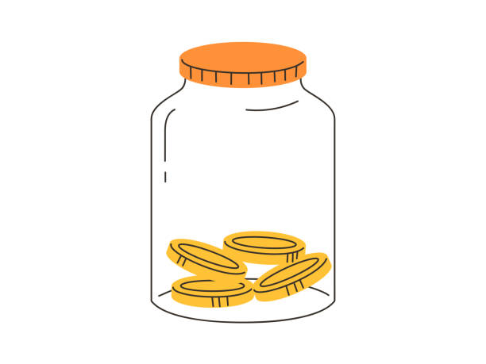

This app is a simple, browser-based budget tracker that lets a user set a spending limit, log individual expenses against it, and immediately see how much money they have left. The purpose is to replace mental math or scattered notes with one clear, visual snapshot of spending. The intended audience is students and young adults managing a limited weekly or monthly amount — like spending money, groceries, or entertainment funds — who want something fast and login-free to check from their phone.
JavaScript drives all of the page's interactivity. Expenses are stored as
objects (description, amount, category) inside an array; submitting the
"add expense" form triggers an event listener that creates a new expense
object, pushes it into the array, and re-renders the list. The running
total is calculated with the array's reduce() method, and the
remaining balance updates and changes color (conditional branching) as the
user nears or exceeds their budget. A category filter uses
filter() to show only matching expenses, and a delete button
on each entry removes it from the array and the DOM. A visual progress bar
("budget jar") fills based on percentage of budget spent, giving an
at-a-glance sense of where they stand.

Palette URL: https://coolors.co/1e3a5f-2e8b57-f4b400-f8f9fa
| Primary | Secondary | Accent 1 | Accent 2 |
|---|---|---|---|
| #1E3A5F | #2E8B57 | #F4B400 | #F8F9FA |
Heading Font: IM Fell French Canon SC
Paragraph Font: Lato
Managing your money is easier when you have a clear plan. A budgeting app can help you track your income, monitor your spending, and set savings goals. By reviewing your finances regularly, you can make informed decisions and build healthy financial habits over time.
Staying consistent with your budget doesn't have to be difficult. Recording expenses, planning for upcoming bills, and checking your progress each week can help you stay on track. Small improvements in your spending habits can lead to greater financial confidence and long-term success.
BudgetJar is a single-page application, so there is only one page in the navigation.
INITIALIZE
SET budgetTotal = 0
SET expenses = [] // array of expense objects: {id, description, amount, category}
SELECT form, budgetInput, expenseList, totalDisplay, remainingDisplay, progressBar, filterButtons
ON PAGE LOAD
DISPLAY empty state message ("No expenses yet")
SET progress bar to 0%
FUNCTION setBudget(amount)
IF amount is empty OR amount <= 0 THEN
SHOW error message
ELSE
SET budgetTotal = amount
CALL updateSummary()
FUNCTION addExpense(description, amount, category)
IF description is empty OR amount <= 0 THEN
SHOW validation error
RETURN
CREATE newExpense = { id: uniqueId, description, amount, category }
PUSH newExpense INTO expenses array
CALL renderExpenseList()
CALL updateSummary()
CLEAR form inputs
FUNCTION renderExpenseList(filteredCategory = "all")
CLEAR expenseList element
IF filteredCategory == "all" THEN
SET itemsToShow = expenses
ELSE
SET itemsToShow = expenses.filter(expense => expense.category == filteredCategory)
IF itemsToShow.length == 0 THEN
DISPLAY "No expenses in this category"
ELSE
FOR EACH expense IN itemsToShow (using forEach)
CREATE list item with description, amount, category, delete button
APPEND list item to expenseList
FUNCTION calculateTotalSpent()
RETURN expenses.reduce((sum, expense) => sum + expense.amount, 0)
FUNCTION updateSummary()
SET totalSpent = calculateTotalSpent()
SET remaining = budgetTotal - totalSpent
SET percentUsed = (totalSpent / budgetTotal) * 100
UPDATE totalDisplay text = totalSpent
UPDATE remainingDisplay text = remaining
// conditional branching on budget status
IF remaining < 0 THEN
SET status = "over budget"
SET progressBar color = red
ELSE IF percentUsed >= 80 THEN
SET status = "approaching limit"
SET progressBar color = yellow
ELSE
SET status = "on track"
SET progressBar color = green
UPDATE progressBar width = percentUsed + "%"
DISPLAY status message based on status
FUNCTION deleteExpense(id)
SET expenses = expenses.filter(expense => expense.id != id)
CALL renderExpenseList()
CALL updateSummary()
EVENT LISTENERS
ON form submit:
PREVENT default page reload
READ values from description/amount/category inputs
CALL addExpense(description, amount, category)
ON budgetInput change:
CALL setBudget(budgetInput.value)
ON click of any delete button (event delegation):
GET expense id from clicked element
CALL deleteExpense(id)
ON click of filter button:
GET selected category from button
CALL renderExpenseList(category)

Mobile-first layout: header at top, budget input and jar visual stacked below it, then the add-expense form, then the filter buttons, then the scrollable expense list. On wider screens, the jar visual and the add-expense form sit side by side above the expense list.
Project URL: https://danieljackson-oss.github.io/WDD-131/Personal%20Project%20Plan/project.html